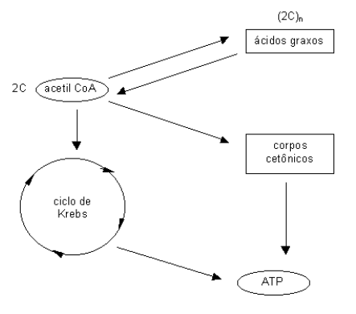
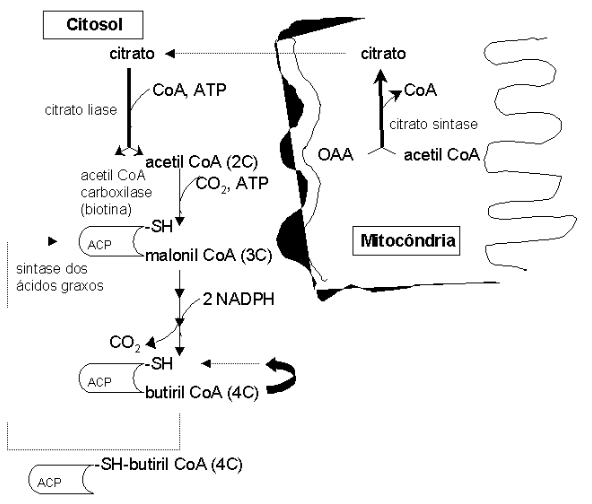
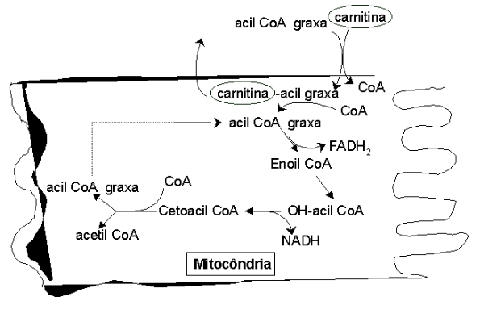

Metabolismo de Lipídios
Objetivos
- Localizar no mapa metabólico a síntese e a degradação de ácidos graxos, bem como o metabolismo do colesterol;
- Entender que a síntese e a degradação de ácidos graxos se dá de forma espiralar, adicionando ou retirando, respectivamente, grupos acetato;
- Compreender como a acetil CoA mitocondrial se regenera no citosol, sítio de síntese de AG.
Síntese de ácidos graxos
- Entender que a síntese de colesterol é muito maior do que a de ácidos graxos em humanos, o que privilegia o controle metabólico do primeiro;
- Compreender a ação da acetil carboxilase e sua modulação na síntese de ácidos graxos;
- Saber qual o papel da ACP (proteína carreadora de AG) e da sintase de ácidos graxos;
- Compreender o papel da biotina e de NADPH na síntese de AG;
- Entender como se processa espiral de síntese de AG, compreendendo as etapas de redução, desidratação e redução novamente.
Degradação de ácidos graxos
- Compreender que a degradação ocorre em duas etapas, a mobilização dos estoques de ácidos graxos dos tecidos (triacilglicerol), lipólise, e a beta-oxidação de ácidos graxos mitocondrial;
- Compreender o papel da lipase sensível a hormônio (glicagon, epinefrina) e da albumina sérica na lipólise;
- Compreender a necessidade de carnitina à beta-oxidação de AG;
- Entender o processo em espiral reverso ao da síntese de AG: oxidação, hidratação, oxidação;
- Entender que cada volta na espiral da beta-oxidação libera 1 acetil CoA, 1 FADH2, e 1 NADH;
- Saber que a beta-oxidação de AG é um espelho metabólico do terço final do ciclo de Krebs.
Metabolismo de corpos cetônicos
- Saber o que são os corpos cetônicos e sua função (acetoacetato, beta-hidroxibutirato; segunda fonte de energia depois da glicose;
- Entender porque esses compostos podem ser utilizados como fontes de energia (acetil CoA);
- Compreender que a descarboxilação acetoacetato produz acetona, e ocorre espontaneamente em humanos;
- Compreender que o excesso metabólico de corpos cetônicos tende a reduzir o pH sanguíneo;
- Saber que o acetil CoA é precursor de corpos cetônicos, quer pelo excesso, quer pela beta-oxidação de ácidos graxos.
Introdução
Os ácidos graxos são a principal forma de reserva de energia para o organismo. Na verdade, a quebra de ácidos graxos libera uma energia 3 vezes maior do que a quebra de carboidratos ou de proteínas. O metabolismo dos ácidos graxos se resume na sua síntese e degradação. Para evitar quebrar um ácido graxo que acabou de sair do forno, a célula separa os compartimentos da síntese e da degradação. Assim, enquanto que a síntese ocorre no citosol, a degradação, com o pomposo nome de -oxidação, ocorre na mitocôndria. Fazer um ácido graxo não é difícil. Como o ácido graxo é formado por uma cadeia comprida de carbonos, até uns 16 ou 20 carbonos, basta a célula ligar carbonos até o comprimento desejado. Pra isso acontecer, entra em ação mais uma vez o acetil CoA. Como ele possui 2 carbonos, ou 2C, a célula só tem o trabalho de ligar –2C-2C-2C-etc.
Para quebrar o ácido graxo, o mesmo procedimento. A célula só tem o trabalho de quebrar um -2C- a cada vez, liberando acetil CoA até o final da quebradeira. Durante essa atividade, um grande número de moléculas energéticas de ATP são liberadas para uso pela célula. Quando a célula, por algum motivo, deixa de quebrar a glicose pra produzir ATP, ela passa a quebrar os ácidos graxos. Acontece que, quando ela quebra muitos ácidos graxos, são formados muitos acetil CoA. Tantos que o ciclo de Krebs não dá conta de quebrar todos. Nesse caso, ocorre um desvio da acetil CoA para formar substâncias muito importantes para gerar energia, os chamados corpos cetônicos.

Detalhes
O metabolismo dos ácidos graxos, principal forma de armazenamento da gordura nos tecidos, envolve uma via espiral de ligações (síntese) e rompimentos (degradação) sucessivos de moléculas de acetato. Enquanto que sua síntese permite a produção de triacilglicerol utilizável pelo organismo, sua degradação permite a liberação de grandes quantidades de ATP. Síntese e degradação estão diferentemente situados na célula. A primeira ocorre no citosol, e a segunda, na mitocôndria. Durante a síntese ocorre inicialmente um ancoramento de um precursor em uma proteína transportadora de grupos acila (ACP). Segue-se uma transcetilação (liberação de C2 ligado em outro sítio da proteína), síntese (montagem sequencial de -C2-C2-C2-), e esterificação (liberação do ácido graxo formado).
Posteriormente, ocorre alongamento da cadeia e dessaturação, essa última produzindo ácidos graxos insaturados. A etapa inicial de síntese envolve uma doação de acetato da acetil CoA. Como esta faz parte do metabolismo intermediário na mitocôndria, precisa ser transportada para o citosol para continuidade da síntese. Neste caso, ocorre uma condensação de acetil CoA e oxalacetato mitocondrial em citrato (citrato liase), o qual é exportado para o citosol, e novamente re-oxidado (citrato liase).
Uma vez no citosol, ocorre uma conversão de acetil CoA em malonil CoA (acetil CoA carboxilase, em presença de biotina), seguindo-se as operações espirais de adição de grupos acetatos à molécula. A principal enzima envolvida neste processo é o complexo multicatalítico da sintase dos ácidos graxos (em procariontes, ACP – domínio de fosfopanteteína). A cada volta na espiral são consumidos 2 NADPHs.
Os principais tecidos envolvidos na síntese são os do fígado e glândulas mamárias (lactação). As fontes para a síntese de ácido graxo incluem a via das pentoses e a oxidação de malato. A síntese é regulada negativamente pelas catecolaminas, glicagon, e por jejum prolongado, sendo ativada por citrato e insulina.
A degradação dos ácidos graxos, também denominada por \(\beta\)-oxidação, ocorre na matriz mitocondrial do tecido adiposo. Como a síntese se dá no citosol, é necessário um transporte das cadeias acila para aquela, trabalho realizado pela carnitina, um derivado de Lys. A lógica da via é uma liberação espiral de acetil CoA. Durante o processo são liberados 1 FADH2 (2 ATPs), 1 NADH (3 ATPs) e 1 acetil CoA. Como cada acetil CoA libera 12 ATPs pelo ciclo de Krebs e cadeia respiratória, pode-se facilmente perceber a grande quantidade de ATP que é produzida na oxidação de um ácido graxo.
Para a degradação de palmitato de 16C, por exemplo, ocorre 7 voltas na espiral de degradação, liberando 8 acetil CoA, 7 NADH e 7 FADH2, num total de 131 ATPs produzidos. A via, que requer a vitamina niacina, é regulada negativamente por acetil CoA e malonil CoA, sendo ativada por lipase sensível à hormônio do tecido adiposo e glicagon.

De particular interesse na oxidação de ácidos graxos, existem cetoácidos produzidos a partir do acetil CoA liberado em excesso, que pode ser utilizado como combusível extra-hepático, os corpos cetônicos. Os corpos cetônicos constituem acetoacetato e hidroxibutirato, que podem migrar pelo sangue, podendo ser novamente re-sintetizados a acetil CoA para uso em tecido muscular, cérebro e córtex adrenal. Em excesso, os corpos cetônicos podem ocasionar cetoacidose, podendo levar à morte por inativação ácida dos tecidos (pKa dos corpos cetônicos gira em torno de 3.5).

Aplicação
As principais enfermidades do metabolismo de ácidos graxos envolvem sua degradação. Assim ocorre com a síndrome da morte súbita do lactente, um quadro de hiperglicemia severa, causado por deficiência da acil CoA desidrogenase, a primeira enzima da oxidação lipídica, levando a baixa cetose (não ocorre a \(\beta\)-oxidação), vômitos e letargia. Cetoacidose diabética, comum no agravamento do diabetes mellitus, leva a uma hiperglicemia, cetonemia e cetonúria, devido à alta relação insulina/glicagon, com consequente ativação da \(\beta\)-oxidação mediada por AMPc. Neste caso, o paciente se apresenta com odor de acetona, por descarboxilação espontânea do acetoacetato em excesso. O fígado gorduroso presente na cetoacidose se desenvolve a partir do excesso de ácidos gráxos que as células hepáticas não conseguem degradar. A grande produção de corpos cetônicos no diabetes tem origem na ausência de produção de insulina pelo organismo.
A insulina inibe a gliconeogênese. Na sua ausência, fontes gliconeogênicas de oxalacetato são mobilizadas para produção de glicose, esgotando o ciclo de Krebs e desviando o acúmulo de acetil CoA para uma síntese excessiva de corpos cetônicos. Conjuntamente, a insulina é necessária à síntese de malonil CoA. Em sua ausência, não se forma malonil CoA, mantendo o acetil CoA represado. Outras doenças do metabolismo de ácidos graxos constituem a pancreatite (deficiência da enzima lipase pancreática, responsável pela liberação de ácidos graxos do triacilglicerol), e deficiência de carnitina ou carnitina palmitoil transferase (levando a cãibras musculares durante o jejum e exercício, e morte em casos extremos). Uma variação da \(\beta\)-oxidação, a \(\alpha\)-oxidação de ácidos graxos metilados, de pouca importância no organismo humano, têm relevância clínica na doença de Refsum, uma deficiência das enzimas de \(\alpha\)-hidroxilação, produzindo distúrbios neurológicos e surdez nervosa. A principal fonte de ácidos graxos metilados encontra-se no leite e nas gorduras animais, ricos em ácido fitânico, um derivado da clorofila.
Doenças do metabolismo lipídico
Clinicamente, existe um grande número de doenças relacionadas aos lipídios, tais como as esfingolipidoses e gangliosidoses (Farber, Niemann-Pick, Tay-Sachs, Fabry) que originam lipogranulomatoses incuráveis. Outras enfermidades de origem genética também são relevantes, tais como a adrenoleucodistrofia (acúmulo de ácidos graxos de cadeia longa; vide o filme “O óleo de Lorenzo”).
As doenças lipídicas de maior incidência populacional, entretanto, são as relacionadas ao metabolismo de ácidos graxos e colesterol, tais como a hipercolesterolemia, apobetalipoproteinemias, arterosclerose (formação de placas de ateroma), hipertrigliceridemias, dentre outras. Em processos inflamatórios, tem os leucotrienos papel fundamental no estabelecimento da asma; drogas anti-inflamatórias não esteroidais, como o isoprofeno, o acetaminofeno e a aspirina, agem no bloqueio da produção de prostaglandinas de efeito pirético (aumento da temperatura corporal), por inibição da PGH-sintase do ácido araquidônico, precursor daquelas.
Doenças do metabolismo de ácidos graxos
As principais enfermidades do metabolismo de ácidos graxos envolvem sua degradação. Assim ocorre com a síndrome da morte súbita do lactente, um quadro de hiperglicemia severa, causado por deficiência da acil CoA desidrogenase, a primeira enzima da oxidação lipídica, levando a baixa cetose (não ocorre a \(\beta\)-oxidação), vômitos e letargia.
Cetoacidose diabética, comum no agravamento do diabetes mellitus, leva a uma hiperglicemia, cetonemia e cetonúria, devido à alta relação insulina/glicagon, com consequente ativação da \(\beta\)-oxidação mediada por AMPc. Neste caso, o paciente se apresenta com odor de acetona, por descarboxilação espontânea do acetoacetato em excesso.
O fígado gorduroso presente na cetoacidose se desenvolve a partir do excesso de ácidos gráxos que as células hepáticas não conseguem degradar. A grande produção de corpos cetônicos no diabetes tem origem na ausência de produção de insulina pelo organismo. A insulina inibe a gliconeogênese. Na sua ausência, fontes gliconeogênicas de oxalacetato são mobilizadas para produção de glicose, esgotando o ciclo de Krebs e desviando o acúmulo de acetil CoA para uma síntese excessiva de corpos cetônicos.
Conjuntamente, a insulina é necessária à síntese de malonil CoA. Em sua ausência, não se forma malonil CoA, mantendo o acetil CoA represado. Outras doenças do metabolismo de ácidos graxos constituem a pancreatite (deficiência da enzima lipase pancreática, responsável pela liberação de ácidos graxos do triacilglicerol), e deficiência de carnitina ou carnitina palmitoil transferase (levando a cãibras musculares durante o jejum e exercício, e morte em casos extremos).
ma variação da \(\beta\)-oxidação, a \(\alpha\)-oxidação de ácidos graxos metilados, de pouca importância no organismo humano, têm relevância clínica na doença de Refsum, uma deficiência das enzimas de \(\alpha\)-hidroxilação, produzindo distúrbios neurológicos e surdez nervosa. A principal fonte de ácidos graxos metilados encontra-se no leite e nas gorduras animais, ricos em ácido fitânico, um derivado da clorofila.
Produção animal
Um quadro comum do metabolismo de ácidos graxos animais de produção envolve a produção excessiva de corpos cetônicos. A cetose costuma acometer rebanho bovino e ovino até 6 semanas após o parto, acarretando uma perda acentuada da produção de leite. O nível de corpos cetônicos em ruminantes, normalmente em torno de 4mg/dl, chega a dobrar no estado hipoglicêmico da cetose. Até 10% de corpos cetônicos produzidos são excretados pela urina e leite. Ovinos obtém 30% de sua energia de corpos cetônicos. Fígados gordurosos em aves reduzem 30% da produção de ovos, com taxa de mortalidade de até 2% ao mês. Alguns ácidos orgânicos produzidos pela fermentação ruminal interagem no metabolismo de ácidos graxos em poligástricos, como o ácido acético, um precursor de triglicérides do tecido adiposo, o ácido propiônico, de potencial glicogênico, e o ácido butírico, de caráter cetogênico.
A silagem possui alto teor de ácido butírico, aumentando a produção de corpos cetônicos. Em plantas, os triglicérides são a principal reserva energética em sementes. À excessão de frutos e sementes, a maior parte das espécies vegetais possuem pouco teor de gorduras. Isto se deve pelo fato de que as plantas não possuem as enzimas da \(\beta\)-oxidação em suas mitocôndrias, não sendo importante, portanto, a degradação de ácidos graxos como fonte energética nos vegetais. Os principais ácidos graxos vegetais são o oléico e linoléico (até 80%), e o ácido palmítico (10%). Em sementes, os ácidos graxos variam bastante (ácido mirístico em noz-moscada, e láurico em palmeira).
Gorduras para aves.
Além de seu aspecto energético propriamente dito, as gorduras possibilitam a absorção de vitaminas lipossolúveis, diminuem a pulvurulência e aumentam a palatabilidade das rações, melhoram a eficiência de utilização de energia consumida (devido ao menor incremento calórico do metabolismo dos lípides), além de reduzirem a velocidade de passagem da ingesta pelo trato gastrintestinal, o que possibilita melhor absorção de todos os nutrientes da dieta, melhorando a conversão alimentar. Pesquisas mostram que pintos de corte submetidos ao jejum até 48 h após o nascimento apresentam melhor digestibilidade de alimentos gordurosos quando lhes é fornecido óleo à ração. Além disso, a redução do nível protéico em rações, em substituição ao óleo tem permitido se verificar uma redução significativa nos quadros de estresse calórico em aves. Esse quadro ocorre devido a temperatura corporal elevada dos animais (42 0C), e ao fato dos mesmos não possuirem glândula sudorípara, tendo ainda o corpo coberto pelo isolante térmico das penas. Contribuindo para isto, alta densidade populacional durante a criação, e produção avícola industrial em países de temperatura e umidade elevada. Assim, a redução de proteína em relação à gordura na ração tem mostrado resultados, uma vez que a proteína é o nutriente que possui maior valor de incremento calórico (26 % de energia metabolizável de mantença, em comparação com lipídios – 9 % e glicídios – 17 %).
Suplementação dietética com vitaminas lipossolúveis, tais como vitamina E também foram reportadas elevar a concentração de tocoferol na gema e nos tecidos, reduzir a retenção corporal do mesmo, aumentar o peso corporal (5,5 g de peso a cada 25 mg de vitamina E), e elevar a retenção de nitrogênio no organismo de matrizes pesadas em picos de produção.
Biohidrogenação ruminal.
A composição de lipídios nas forragens, a qual varia de 2 a 4 % na matéria seca, consiste em grande parte em glicolipídios e fosfolipídios, e os ácidos graxos principais são os insaturados linolênico e linoléico. Em contraste, a composição dos lipídios nos óleos de sementes utilizadas nos concentrados é predominantemente de triglicerídios que contém ácido linoléico e ácido oléico. Quando consumido por ruminantes, o lipídio dietético sofre duas transformações importantes no rúmen. A transformação inicial é a hidrólise das cadeias de éster catalisada pelas lipases microbianas. O segundo passo é a transformação de ácidos graxos insaturados, essa denominada por biohidrogenação, realizada primariamente por bactérias ruminais.
A biohidrogenação envolve diversos passos bioquímicos, catalizados por diferentes cepas microbianas ruminais. Em conjunto, as bactérias se dividem no grupo que hidrogenam o ácido linoléico (poliinsaturado) a ácido elaídico (forma isomérica do oléico, monoinsaturado), e as que utilizam esse último como substrato principal para a síntese de ácido esteárico (saturado).
Uso de \(\beta\)-adrenérgicos na alimentação animal.
Um dos problemas que os produtores de bovinos enfrentam, é a produção de carcaças com altos conteúdos de gordura. Além da manipulação direta de nutrientes, muitas substâncias estruturalmente similares a catecolaminas que estimulam a glicólise a a lipólise no músculo, e com menor interferência no metabolismo protéico, vem sendo desenvolvidas para adminstração oral em bovinos, ovinos, e suínos.
Esses assim chamados \(\beta\)-adrenérgicos atuam em células efetoras através de receptores adrenérgicos de proteínas G. Assim, clenbuterol, cimaterol, isoprotenerol, sabutarol, ractopamine e análogos, fornecidos oralmente a 0,25 a 12 mg/kg de peso vivo animal, parecem surtir efeito no incremento de massa muscular, através da redução de degradação protéica concomitante à deposição de proteína, e elevação nos teores séricos de insulina.
No tecido adiposo, os \(\beta\)-adrenérgicos são parecem reduzir o teor de gordura da carcaça, através de mecanismos que envolvem a degradação de triacilglicerol concomitante à redução de síntese endógena de ácidos graxos, aumentando a liberação de ácidos graxos livres no plasma dos animais. Além disso, estímulo de glicagon e redução do número de receptores de insulina e de sua combinação hormonal também estão enumerados no mecanismo de ação destes compostos.
Não obstante, o uso de \(\beta\)-adrenérgicos é discordante na literatura com relação a ampla variedade de doses, tipo de animais e métodos de utilização. Contrariamente aos seus aparentes benefícios, há registros de menor tenrez, maior resistência ao corte, escurecimento e opacidade da carne de animais tratados com os análogos.
Como promotores de crescimento para animais domésticos, os agonistas \(\beta\)-adrenérgicos não estão licenciados para uso no Brasil, EUA e Comunidade Econômica Européia. Além disso, existem diversos casos de intoxicação humana reportados após o consumo de carne bovina de animais tratados. Em granja de frangos, os \(\beta\)-adrenérgicos não registraram benefícios justificáveis para o seu uso.
Síntese
Biossíntese
- Conceito: via cíclica de produção de ácido graxo a partir de ligações sucessivas de acetil CoA;
- Importância: produção de gorduras (triacilglicerol) utilizáveis pelo organismo para suprimento energético; 1. Localização: citosol;
- Produção de ácidos graxos de cadeia ímpar: síntese de ácido propiônico: consumo de ATP, e vitaminas biotina e vit. B12;
- Doença: acidúria metilmalônica (incapacidade de conversão de vit B12);
- Lógica da via: ancoramento de precursor (acetato-C2, mais comum, ou propionato-C3) em proteína transportadora de grupos acila (ACP), transacilação (liberação de C2 ligado em outro sítio da proteína), síntese (montagem sequencial de C2-C2-C2-etc), e esterificação (liberação do ácido graxo); posteriormente, alongamento e dessaturação;
- Transporte mitocondrial de acetil CoA: necessidade de condensação de acetil CoA e oxalacetato em citrato (citrato sintase), exportado para o citosol, e novamente reoxidado (citrato liase);
- Primeira etapa: conversão de acetil CoA em malonil CoA por acetil CoA carboxilase, em presença de biotina;
- Principal enzima: complexo multicatalítico da sintase dos ácidos graxos; nos procariontes, papel da ACP (domínio de fosfopanteteína);
- Principais tecidos: fígado e glândulas mamárias (lactação);
- Fontes: via das pentoses e oxidação de malato;
- Regulação: adrenalina (-), citrato (+), insulina (+), jejum prolongado (-);
- Síntese de triacilglicerol: produção de glicerol fosfato hepático ou adiposo a partir de diidroxiacetona fosfato, ou pela glicerol quinase (somente fígado); posteriormente, atividade da aciltransferase dos ácidos graxos;
- Consumo de 2 NADPH por volta no ciclo
Degradação
- Conceito: liberação sequencial de acetil CoA do ácido graxo;
- Importância: síntese de grande quantidades de ATP;
- Localização: mitocôndria (matriz) de tecido adiposo marrom;
- Transporte mitocondrial (carnitina leva ácido graxo do citosol à matriz mitocondrial);
- Rendimento de ATP: 1 acetil CoA, 1 FADH2 e 1 NADH por volta no ciclo; ex: palmitato, 16C, percorre 7 vezes a espiral até o último acetil CoA, produzindo 7 FADH2, 7 acetil CoA, 7 NADH, e 1 último acetil CoA. Como cada acetil CoA rende 12 ATPs no ciclo de Krebs, cada NADH rende 3 ATPs na cadeia respiratória, e cada FADH2 rende 2 ATPs na mesma cadeia, a oxidação do palmitato produz 7x3+7x2+8x12 ATPs. Total: 131 ATPs;
- Lógica da via: liberação em espiral de acetil CoA;
- Regulação: malonil CoA (-) e acetil CoA (-), lipase sensível a hormônio (+);
- Vitaminas do ciclo: niacina (NAD) e riboflavina (FAD);
Corpos cetônicos
- Conceito: formação de acetoacetato e hidroxibutirato a partir de acetil CoA em excesso; 1. Importância: podem migrar pelo sangue, podendo ser novamente re-sintetizados a acetil CoA e utilizados como combustíveis em tecidos musculares,cérebro e córtex adrenal; em excesso, causam acidose, podendo levar à morte;
- Doenças: cetoacidose diabética (hiperglicemia, cetonemia e cetonúria, devido a alta relação glicagon/insulina, com consequente ativação da beta-oxidação mediada por AMPc); síndrome da morte súbita do lactente (quadro de hipoglicemia severa, por deficiência da acil CoA desidrogenase - 1a enzima da oxidação).